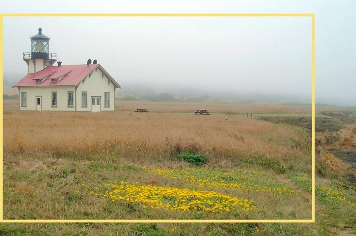
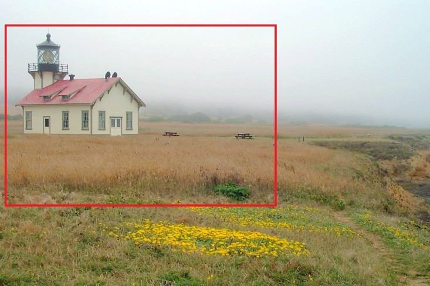

Giving a score to your photography composition and image cropping experience.
(1-5, higher scores represent more experience in considering photography composition when cropping images.)
(1-5, higher scores represent more experience in considering photography composition when cropping images.)
Image cropping is highly subjective and its results' diversity derives from possible different subjective intentions of the user: modification and highlight. The modification category means that the user substantially satisfies the overall composition of an original image while intends to retain most of the content and makes simple modification. For highlight category, the user intends to break the original composition and highlight certain objects or scenes of the image so that the content is cropped to a large extent.


modification
highlight
Do you have the subjective intents(modification and highlight) introduced above when cropping an image?
Source image
Crop in the image
Cropped image
Which category do you think the image cropping results prefer?
Thank you for your participation.